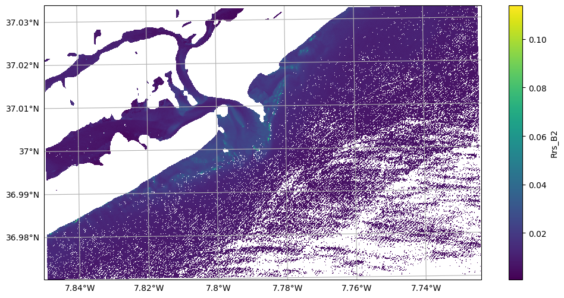
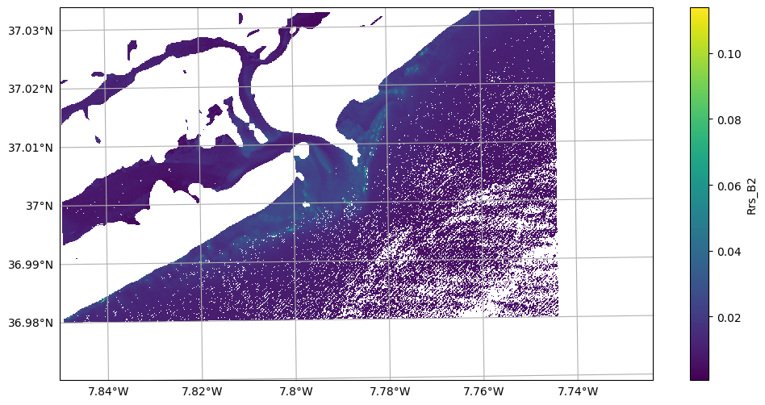
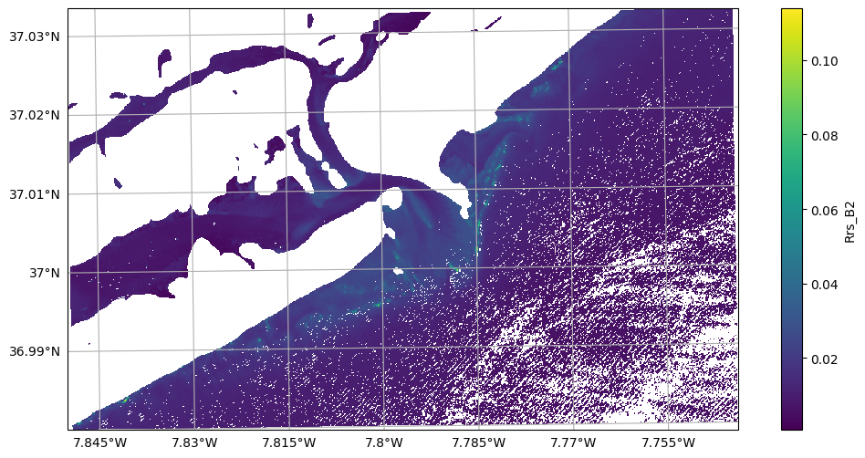
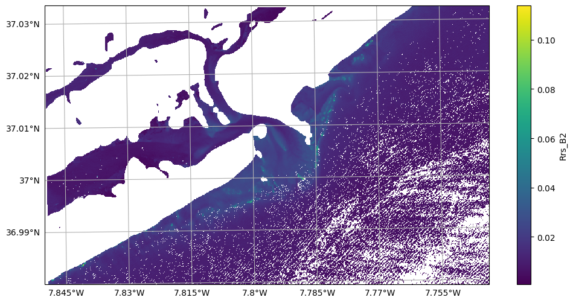
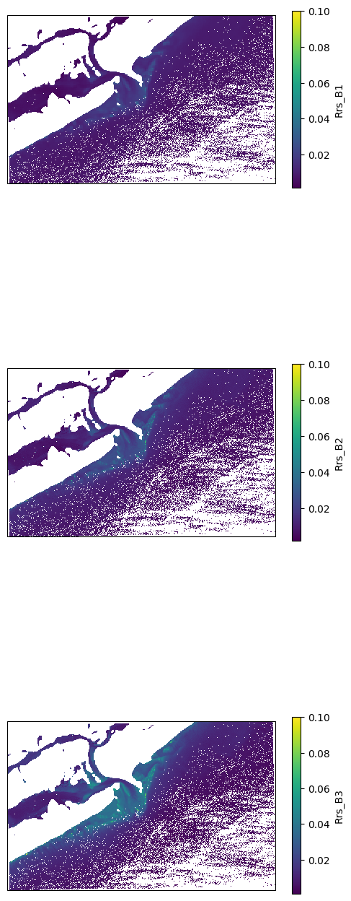
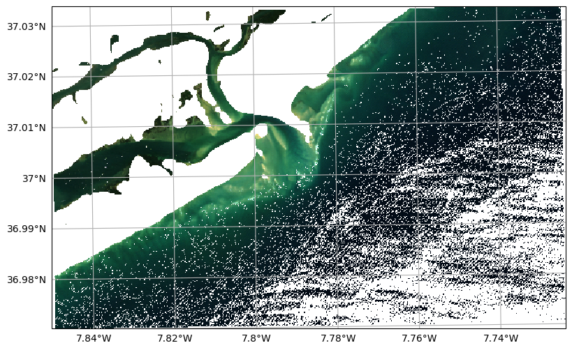
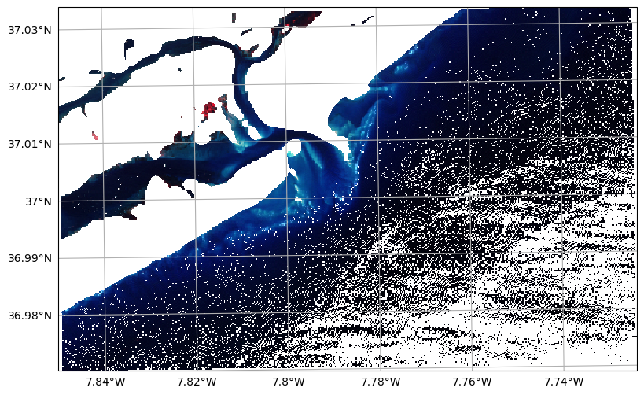

Reading NetCDF files#
[1]:
import sys
import numpy as np
import matplotlib.pyplot as plt
from sensingpy import reader, image, plot, enums
[2]:
import warnings
warnings.filterwarnings("ignore")
Helpers
[3]:
filename = r"D:\batimetria\algarve\satelite\local_original\Armona\20180912_S2B_AGV_29SPA_L2W.nc"
def load_image() -> image.Image:
return reader.open(filename)
def plot_band(img : image.Image, band_name) -> None:
fig, ax = plot.get_geofigure(img.crs, 1, 1)
ax, mappable = plot.plot_band(img, band_name, ax = ax)
ax = plot.add_gridlines(ax)
fig.colorbar(mappable, label = band_name)
return ax
[4]:
raster : image.Image = load_image()
raster
[4]:
<xarray.Dataset> Size: 114MB
Dimensions: (y: 707, x: 1124)
Coordinates:
transverse_mercator (y, x) float64 6MB ...
lon (y, x) float64 6MB ...
lat (y, x) float64 6MB ...
* x (x) float64 9kB 6.023e+05 6.023e+05 ... 6.136e+05
* y (y) float64 6kB 4.099e+06 4.099e+06 ... 4.092e+06
Data variables: (12/29)
Rrs_442 (y, x) float32 3MB ...
Rrs_492 (y, x) float32 3MB ...
Rrs_559 (y, x) float32 3MB ...
Rrs_665 (y, x) float32 3MB ...
Rrs_704 (y, x) float32 3MB ...
Rrs_739 (y, x) float32 3MB ...
... ...
chl_re_moses3b (y, x) float32 3MB ...
chl_re_moses3b740 (y, x) float32 3MB ...
ndci (y, x) float32 3MB ...
fai (y, x) float32 3MB ...
fait (y, x) float32 3MB ...
ndwi (y, x) float32 3MB ...
Attributes: (12/382)
generated_by: ACOLITE
generated_on: 2025-02-13 16:13:18 Hora están...
contact: Quinten Vanhellemont
product_type: NetCDF
metadata_profile: beam
metadata_version: 0.5
... ...
scene_download: False
EARTHDATA_u: icman
EARTHDATA_p: Icman_2022
runid: 20250213_161225
inputfile: D:\NRT-Sentinel2\outputs\raw\S...
grid_mapping: transverse_mercatorAccess properties#
[5]:
raster.width
[5]:
1124
[6]:
raster.height
[6]:
707
[7]:
raster.band_names[:5]
[7]:
['Rrs_442', 'Rrs_492', 'Rrs_559', 'Rrs_665', 'Rrs_704']
[8]:
raster.transform
[8]:
Affine(10.0, 0.0, 602330.0,
0.0, -10.0, 4099260.0)
[9]:
raster.crs
[9]:
<Projected CRS: PROJCRS["unknown",BASEGEOGCRS["unknown",DATUM["Wor ...>
Name: unknown
Axis Info [cartesian]:
- E[east]: Easting (metre)
- N[north]: Northing (metre)
Area of Use:
- undefined
Coordinate Operation:
- name: UTM zone 29N
- method: Transverse Mercator
Datum: World Geodetic System 1984
- Ellipsoid: WGS 84
- Prime Meridian: Greenwich
Data manipulation#
[10]:
raster.rename_by_enum(enums.SENTINEL2_BANDS)
raster.band_names[:5]
[10]:
['Rrs_B1', 'Rrs_B2', 'Rrs_B3', 'Rrs_B4', 'Rrs_B5']
Raster operations#
Resample#
[11]:
raster.resample(scale = 2, downscale = True)
raster.transform
[11]:
Affine(20.0, 0.0, 602330.0,
0.0, -20.0, 4099260.0)
Change de CRS#
[12]:
import cartopy
import cartopy.crs
raster.reproject(cartopy.crs.Mercator())
raster.transform
[12]:
Affine(24.96727671881672, 0.0, -873888.0193230037,
0.0, -24.967276719398797, 4418093.425544091)
Mask using geometries#
[13]:
import geopandas as gpd
raster : image.Image = load_image()
raster.rename_by_enum(enums.SENTINEL2_BANDS)
shapes = gpd.read_file(r"D:\repos\geopy_usage\areas\armona.json").to_crs(raster.crs).geometry
shapes
[13]:
0 POLYGON ((602227.983 4099102.643, 611710.254 4...
Name: geometry, dtype: geometry
[14]:
plot_band(raster, "Rrs_B2")
raster.geometry_mask(shapes)
plot_band(raster, "Rrs_B2")
[14]:
(<GeoAxes: >, <cartopy.mpl.gridliner.Gridliner at 0x2128a962050>)


Delete empty rows & cols#
[15]:
raster.dropna()
plot_band(raster, "Rrs_B2")
[15]:
(<GeoAxes: >, <cartopy.mpl.gridliner.Gridliner at 0x2128ad17f90>)

Clip by geometry#
[16]:
raster : image.Image = load_image()
raster.rename_by_enum(enums.SENTINEL2_BANDS)
plot_band(raster, "Rrs_B2")
raster.clip(shapes)
plot_band(raster, "Rrs_B2")
[16]:
(<GeoAxes: >, <cartopy.mpl.gridliner.Gridliner at 0x2129e2c6bd0>)

Plots#
Single Band#
[17]:
raster : image.Image = load_image()
raster.rename_by_enum(enums.SENTINEL2_BANDS)
raster.resample(scale = 2, downscale = True)
fig, axs = plot.get_geofigure(raster.crs, len(raster.band_names[:3]), 1, figsize = (6, 6 * len(raster.band_names[:3])))
for ax, band_name in zip(axs, raster.band_names[:3]):
ax, mappable = plot.plot_band(raster, band_name, ax = ax, vmax = 0.1)
fig.colorbar(mappable, label = band_name, shrink = 0.6)

RGB (True color)#
[18]:
fig, ax = plot.get_geofigure(raster.crs, 1, 1)
ax = plot.plot_rgb(raster, 'Rrs_B4', 'Rrs_B3', 'Rrs_B2', ax = ax, brightness = 15)
ax = plot.add_gridlines(ax)

False composite#
[19]:
fig, ax = plot.get_geofigure(raster.crs, 1, 1)
ax = plot.plot_rgb(raster, 'Rrs_B8', 'Rrs_B4', 'Rrs_B3', ax = ax, brightness = 15)
ax = plot.add_gridlines(ax)
